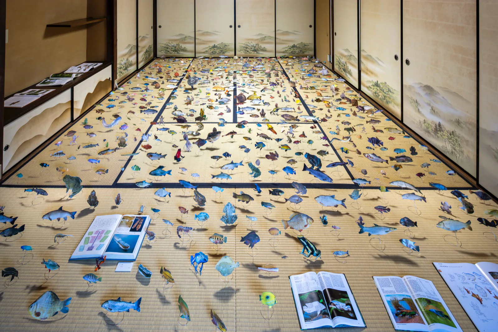

渡辺英司
アーティスト
経歴Profile
一九六一年、愛知県に生まれる。一九八五年に愛知県立芸術大学彫刻科を卒業し、一九八九年に名古屋のステゴザウルス スタジオで初個展。一九九四年からケンジタキギャラリーで個展を重ねる。
図鑑の植物や魚を切り抜いて庭のように並べる《名称の庭》の連作、「蝶瞰図」「エデンの海」といった言葉遊びのタイトル、星画廊やアートオブリスト、Jingu339 など場をつくる企画で知られる。二〇〇四年から翌年にかけて、文化庁芸術家在外派遣研修員としてスコットランドに滞在した。
名古屋と愛知県阿久比町のスタジオで制作している。
Eiji WatanabeArtist

活動の柱Threads
- 名称の庭の連作
- 図鑑の植物や魚を切り抜き、庭のように並べる（1997年〜）
- 言葉遊びのタイトル
- 蝶瞰図、エデンの海、常緑、話す鏡
- 企画・場づくり
- 星画廊（2010–16）、ボタンギャラリー、アートオブリスト（2016–18）、Jingu339（2023〜）
- 滞在制作
- 山口、エジンバラ、オークニー（2001〜2016）
略歴Biography
- 1961
- 愛知県に生まれる
- 1985
- 愛知県立芸術大学彫刻科卒業
- 2004–2005
- 文化庁芸術家在外派遣研修員としてスコットランドに滞在（エジンバラ芸術大学客員研究員）
- 名古屋市在住。名古屋および愛知県阿久比町のスタジオにて制作
略歴（英語）Biography
- 1961
- Born in Aichi, Japan
- 1985
- Graduated from Sculpture Course, Aichi Prefectural University of Fine Arts and Music
- 2004–2005
- Edinburgh College of Art, Edinburgh (grant from Japanese Agency for Cultural Affairs)
- Lives and works in Nagoya
個展Solo Exhibitions
- 1989–93
- ステゴザウルス スタジオ（名古屋）
- 1994
- ケンジタキギャラリー（名古屋）「形影の素振り part 1」「形影の素振り part 2」
- 1995/96
- ケンジタキギャラリー（名古屋）「ブロッケンの妖怪」
- 1997
- ケンジタキギャラリー（名古屋）「白い息」「星の名前」
ときわ画廊（東京）「名称の庭 1997」 - 1998
- ケンジタキギャラリー（名古屋）
- 1999
- ケンジタキギャラリー（東京）「言の記憶」「他人の仕業」
- 2000
- ケンジタキギャラリー（東京）「時の外」
- 2001
- ケンジタキギャラリー（東京）
ケンジタキギャラリー（名古屋）「望遠」 - 2002
- ケンジタキギャラリー（東京）「明日は昨日」
- 2003
- エジンバラ芸術大学 スカルプチャーコート（エジンバラ）「名称の庭 2003」
- 2004
- ケンジタキギャラリー（名古屋）
- 2005
- The Glasshouse Hotel（エジンバラ）「名称の庭 2005」
エジンバラ芸術大学 C3 studio（エジンバラ）「Re-」 - 2006
- ケンジタキギャラリー（名古屋）「青色の赤／赤色の青」
- 2007
- ケンジタキギャラリー（名古屋）「ポーズ」
- 2008
- ケンジタキギャラリー（東京）「王者は、日曜日に雑誌で飛躍する」
美濃加茂市民ミュージアム（美濃加茂、岐阜）「図鑑庭園」 - 2009
- 碧南市哲学たいけん村 無我苑（碧南、愛知）「話す鏡」
ケルンギャラリー（ピトゥウィーム、イギリス）「蝶瞰図 / ケルンインスタレーション2009」
枚方市立御殿山生涯学習美術センター（枚方）「図鑑採集」 - 2010
- オークニー島 アーティスト・イン・レジデンス（オークニー、イギリス）
- 2011
- ケンジタキギャラリー（東京）「コメット」
- 2012
- ケンジタキギャラリー（東京）「コメット comet II」
- 2013
- Tent、sleeper（エジンバラ、イギリス）
ケンジタキギャラリー（名古屋）「Vehicles（乗り物）」 - 2014
- ケンジタキギャラリー（東京）「複製の庭 Garden of the Reproduction」
- 2015
- ケンジタキギャラリー（名古屋）「急げ、ゆっくり」
- 2016
- sleeper（エジンバラ、イギリス）
- 2017
- ケンジタキギャラリー（東京）「瞬き / Blink」
- 2018/19
- 「渡辺英司 - 胡蝶の夢」ふじ・紙のミュージアム（富士、静岡）
- 2020
- ケンジタキギャラリー（名古屋）「Merman / おとこの人魚」
- 2022
- 東静岡アート＆スポーツ／ヒロバ（静岡）「Release / 解放」
ケンジタキギャラリー（東京）「Sea of Eden / エデンの海」
OCAILLE（東京）「TIME FILES - Eiji Watanabe」（キュレーター 鈴木潤子） - 2024
- ケンジタキギャラリー（東京）「モーニングスター（明けの明星）」
- 2025
- 東京ビエンナーレ エトワール海渡リビング館（東京）
Art Obulist 2025 ワタナベエイジ展「Morning Monsters / W Eiji」大倉公園（大府、愛知）
主なグループ展Selected Group Exhibitions
- 1991
- 第10回 平行芸術展、東京小原流会館（東京）
- 2001
- 「出会い」東京オペラシティ アートギャラリー（東京）
「Art in the Home」（山口） - 2002
- 「Art in the Home」（エジンバラ）
「オフサイド」gm（大阪）／横浜美術館アートギャラリー（横浜） - 2007
- 「笑い展：現代アートにみる「おかしみ」の事情」森美術館（東京）
「サイクルとリサイクル」愛知県美術館（名古屋） - 2009
- 「福武ハウス／越後妻有アートトリエンナーレ 2009」（十日町、新潟）
- 2010
- 「あいちトリエンナーレ2010」長者町スターネットジャパンビル、愛知芸術文化センター（名古屋）
- 2013
- 「Nissan Art Award 2013」BankART Studio NYK（横浜）
- 2015
- 「芸術植物園」愛知県美術館（名古屋）
- 2016
- Art Obulist 2016「Hurry! slowly - 急げ! ゆっくり」大府市勤労文化会館（大府、愛知）
- 2017
- 「Art Zuid 2017」アートチャペル（アムステルダム）
- 2019
- 「アイチアートクロニクル1919-2019」愛知県美術館（名古屋）
- 2022
- 「PAPER：かみと現代美術」熊本市現代美術館（熊本）
- 2025
- 「ARTZUID 2025」（アムステルダム）
主なプロジェクトProjects: curating and running spaces
- 2004
- 「conran show」OKADA STUDIO（知多、愛知）企画
- 2005
- 木村充伯 個展「絵具彫刻」at the flat（エジンバラ）企画
- 2006
- 木村充伯 個展「ISOUROU」sakurayama studio（名古屋）企画
- 2008
- 「野外研究」美濃加茂市民ミュージアム 野外（美濃加茂、岐阜）企画
- 2009
- 「碧南ソクラテスス 無知の無知 part2」無我苑（碧南、愛知）企画
- 2010–16
- 星画廊（名古屋、伏見地下街）企画・運営
- 2015
- アダム・バーカー・ミル 展 ボタンギャラリー（名古屋）Star Projects として企画
- 2016
- ポール・フーデ 展 ボタンギャラリー（名古屋）Star Projects として企画
Art Obulist 2016「Hurry! slowly - 急げ! ゆっくり」大府市勤労文化会館 企画
「LIFE IS BEAUTIFUL」アートラボあいち大津橋（名古屋）Star Projects として出展 - 2017
- Art Obulist 2017「アート おぶ アート」大府市役所周辺各所 企画
- 2018
- Art Obulist 2018「見るなの座敷」大府市役所周辺各所 企画
- 2019
- 「a secret garden」OCAILLE（東京）店舗内インスタレーション
- 2020
- Super Gallery（名古屋）企画・監修：渡辺英司＋MAT Nagoya
- 2023
- Jingu339（名古屋）プロジェクトスペース開設、運営
パブリックコレクションPublic Collections
- 愛知県美術館（名古屋）
- 大分県立美術館（大分）
- 碧南市藤井達吉現代美術館（碧南、愛知）
全文の略歴（個展・グループ展・出版物）はカタログ p.67–72 に収録。ケンジタキギャラリー、Jingu339 へのリンクは URL 確認後に追加する。